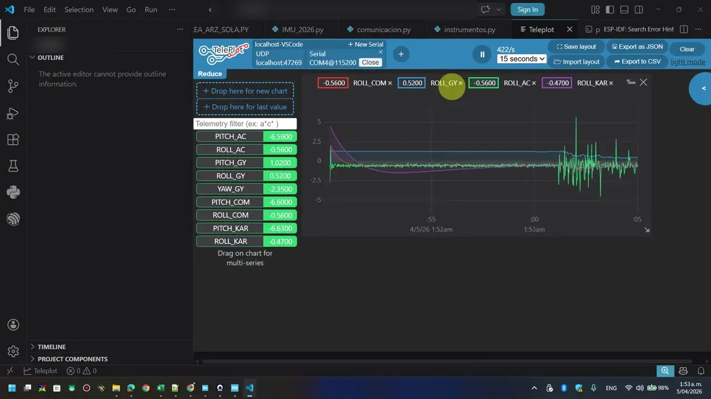

Se alimenta de 3 a 5 V. SCL y SDA van al I2C del micro; el módulo ya trae las pull-up.
AD0 a tierra o al aire: dirección 0x68; AD0 a 3.3 V: 0x69.
El MPU6050 tiene acelerómetro (mide aceleración en g) y giroscopio (mide velocidad angular en °/s); ninguno mide ángulo directamente. Con la librería MPU6050 de la clase, en el STM32F411 inicializamos y calibramos el sensor, leemos datos crudos, los convertimos con la sensibilidad configurada y calculamos ángulos: con el acelerómetro (rápido pero ruidoso con vibraciones) y con el giroscopio integrando (limpio pero con deriva y dependiente de un tiempo de muestreo exacto). Al final combinamos ambos con el filtro complementario y el filtro de Kalman y comparamos todo en Teleplot.

Se alimenta de 3 a 5 V. SCL y SDA van al I2C del micro; el módulo ya trae las pull-up.
AD0 a tierra o al aire: dirección 0x68; AD0 a 3.3 V: 0x69.
En el STM32F411 activamos el cristal externo y llevamos el reloj a 100 MHz (importante para la precisión).
Activamos USART1 a 115200 e I2C1 en Fast Mode (400 kHz), que el sensor acepta. El proyecto se llama MPU6050_ARZ_2026.
Creamos la carpeta LIBRERIAS en Core, la agregamos al path y copiamos uart, MPU6050 y kalman (la librería del MPU la necesita aunque no uses el filtro de Kalman).
En MPU6050.h se elige si el muestreo se hace con timer (más preciso, se usará en la siguiente clase) o con retardos.
Para trabajar sin timer dejamos comentado el define de timer y ponemos el tiempo de muestreo en ms (10 ms). También se define el I2C del sensor.
// MPU6050.h
#include "main.h"
#include "kalman.h"
#include "math.h"
// si manda info serial
#include "uart.h"
// descomentar si usa timer que es mas preciso
#define tiempo_muestreo 10 // tiempo muestreo ms
// colocar el i2c a usar con el imu
#define imu_i2c hi2c1Cuando se define tiempo_muestreo la librería incluye timer.h; revisa el bloque #ifdef de la librería según la versión que tengas.
En MPU6050.c se indica el UART que usan las funciones MANDA_... y se activa printf con float en las opciones del proyecto.
// MPU6050.c
// si manda info serial
extern UART_HandleTypeDef huart1;
char tele[20];Incluimos uart, MPU6050, stdio, string, math y stdlib.
/* USER CODE BEGIN Includes */
#include "uart.h"
#include "MPU6050.h"
#include "stdio.h"
#include "string.h"
#include "math.h"
#include "stdlib.h"Enviamos "INICIANDO" y llamamos MPU6050_init().
La función pregunta WHO_AM_I (registro 0x75), que debería responder 0x68. Algunos clones responden otro valor (0x72) aunque funcionan, por eso esa verificación se quitó de la librería.
/* USER CODE BEGIN 2 */
uartx_write_text(&huart1, "INICIANDO\r\n");
MPU6050_init();
MPU6050_Calibra();Si tu sensor es original y quieres ser estricto, puedes volver a activar la verificación de WHO_AM_I.
El giroscopio tiene offset y deriva. La calibración toma 1000 muestras con el sensor quieto, las suma y las promedia para restarlas luego.
void MPU6050_Calibra()
{
uint16_t conta_;
off_giro_x = 0; off_giro_y = 0; off_giro_z = 0;
for (conta_ = 0; conta_ < 1000; conta_++)
{
MPU6050_lee_datos1();
off_giro_x += MPU6050.giro_x;
off_giro_y += MPU6050.giro_y;
off_giro_z += MPU6050.giro_z;
HAL_Delay(1);
}
// luego se divide entre 1000 para tener el offset
}No muevas el sensor mientras calibra.
MPU6050_lee_datos() lee acelerómetro, giroscopio y temperatura (cada valor son dos bytes) y resta el offset del giro.
MPU6050.ace_x = (int16_t)(Dato_buff[0] << 8 | Dato_buff[1]);
MPU6050.ace_y = (int16_t)(Dato_buff[2] << 8 | Dato_buff[3]);
MPU6050.ace_z = (int16_t)(Dato_buff[4] << 8 | Dato_buff[5]);
MPU6050.giro_x = (int16_t)(Dato_buff[8] << 8 | Dato_buff[9]);
MPU6050.giro_y = (int16_t)(Dato_buff[10] << 8 | Dato_buff[11]);
MPU6050.giro_z = (int16_t)(Dato_buff[12] << 8 | Dato_buff[13]);
MPU6050.giro_x -= off_giro_x;
MPU6050.giro_y -= off_giro_y;
MPU6050.giro_z -= off_giro_z;Las funciones MANDA_ACELERACION y MANDA_GIROS envían en formato Teleplot (>AX:valor). En el while leemos y enviamos con un retardo de 5 ms.
Los datos también están en MPU6050.ace_x, ace_y, ace_z, giro_x, giro_y, giro_z si quieres armar tu propia trama.
void MANDA_ACELERACION()
{
sprintf(tele, ">AX:%d\n", MPU6050.ace_x);
uartx_write_text(&huart1, tele);
sprintf(tele, ">AY:%d\n", MPU6050.ace_y);
uartx_write_text(&huart1, tele);
sprintf(tele, ">AZ:%d\n", MPU6050.ace_z);
uartx_write_text(&huart1, tele);
}
// main.c
while (1)
{
MPU6050_lee_datos();
MANDA_ACELERACION();
MANDA_GIROS();
HAL_Delay(5);
}En Teleplot aparecen AX, AY, AZ, GX, GY, GZ. Al mover el sensor cambian según el eje. Con vibraciones el acelerómetro se llena de ruido; el giroscopio mucho menos.
Si Teleplot no muestra nada, ciérralo y ábrelo otra vez; verifica con Hercules que sí se está transmitiendo (y luego cierra Hercules).
En MPU6050_init se elige el rango: giroscopio 250, 500, 1000 o 2000 °/s y acelerómetro 2, 4, 8 o 16 g.
Cada rango tiene su sensibilidad (por ejemplo 131 LSB por °/s para 250 °/s). La librería la toma automáticamente.
enum giro_sen_ {G_250=0, G_500=8, G_1000=16, G_2000=24};
enum acel_sen_ {A_2g=0, A_4g=8, A_8g=16, A_16g=24};
// en MPU6050_SEN:
// G_250 -> giro_sen = 131.0
// G_500 -> giro_sen = 65.5
// G_1000 -> giro_sen = 32.8MPU6050_calcula_flotantes() divide los datos crudos entre la sensibilidad: aceleración en g y velocidad angular en °/s. También calcula la temperatura.
void MPU6050_calcula_flotantes()
{
MPU6050.ace_x_f = (float)MPU6050.ace_x/acel_sen;
MPU6050.ace_y_f = (float)MPU6050.ace_y/acel_sen;
MPU6050.ace_z_f = (float)MPU6050.ace_z/acel_sen;
MPU6050.giro_x_f = (float)MPU6050.giro_x/giro_sen;
MPU6050.giro_y_f = (float)MPU6050.giro_y/giro_sen;
MPU6050.giro_z_f = (float)MPU6050.giro_z/giro_sen;
MPU6050.temperatura = ((float)MPU6050.temperatura_raw/340.0) + 36.54;
}Con MANDA_GRAVEDADES y MANDA_VEL_ANGULAR vemos GRAX/GRAY/GRAZ en g y VELX/VELY/VELZ en °/s.
while (1)
{
MPU6050_lee_datos();
MPU6050_calcula_flotantes();
MANDA_GRAVEDADES();
MANDA_VEL_ANGULAR();
HAL_Delay(5);
}MPU6050_Ace_angulos() calcula pitch y roll con arcotangente a partir de la gravedad. No necesita tiempo, pero no mide yaw.
MPU6050_Giro_angulos() integra la velocidad angular (suma por el tiempo de muestreo) y da pitch, roll y yaw, pero el tiempo de muestreo debe ser exacto.
while (1)
{
MPU6050_lee_datos();
MPU6050_calcula_flotantes();
MPU6050_Ace_angulos();
MPU6050_Giro_angulos();
MANDA_ANG_ACEL();
MANDA_ANG_GIRO();
delay_ms(9); // ~10 ms de muestreo en total
}Si el programa tiene otros retardos, el ángulo del giroscopio queda mal. En la siguiente clase se resuelve con timer.
HAL_Delay no es muy preciso, así que incluimos la librería delays y la inicializamos con delay_Init() para usar delay_ms.
#include "delays.h"
/* USER CODE BEGIN 2 */
delay_Init();El ángulo del acelerómetro salta con cualquier vibración. El del giroscopio es más limpio pero con el tiempo se va alejando (deriva por la integración).
Combina los dos: le da peso alfa al giroscopio integrado y 1 − alfa al acelerómetro. Con alfa entre 0.95 y 0.99 se quita la vibración y se evita la deriva.
Mientras más alto alfa, más confía en el giroscopio y más ruido filtra.
// idea del filtro:
// angulo = alfa*(angulo + giro*dt) + (1 - alfa)*angulo_acel;
void Filtro_Complementario(float alpha);
void filtro_kalman();Llamamos Filtro_Complementario(0.95) y filtro_kalman() y enviamos los ángulos de cada método.
El filtro de Kalman recibe el ángulo del acelerómetro y la velocidad del giro multiplicada por el tiempo de muestreo; hay que inicializar sus canales de pitch y roll al principio del programa.
while (1)
{
MPU6050_lee_datos();
MPU6050_calcula_flotantes();
MPU6050_Ace_angulos();
MPU6050_Giro_angulos();
Filtro_Complementario(0.95);
filtro_kalman();
MANDA_ANG_ACEL();
MANDA_ANG_GIRO();
MANDA_ANG_COMPLE();
MANDA_ANG_KARMAN();
delay_ms(9);
}El nombre exacto de la función que inicializa el Kalman está en la librería (ver MPU6050.h); en el video se menciona pero no se muestra.
Pitch y roll del complementario y del Kalman son muy parecidos y casi no se afectan con la vibración, mientras el acelerómetro solo salta mucho. El Kalman queda un poco más limpio que el complementario.
Ambos dependen de un tiempo de muestreo exacto: eso se resuelve en la siguiente clase.